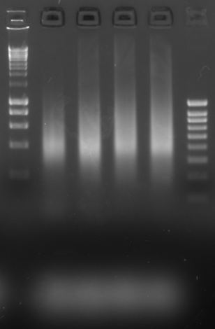

Test PCRs
Before amplifying an entire DNA library for sequencing, we often perform a test PCR, amplifying a fraction of the library to estimate the number of amplification cycles required for the remainder. This helps ensure that we do not over-amplify the library, which would reduce library complexity and bias it towards shorter fragments.
Test PCRs have three key variables that depend on the upstream genomics technique:
The desired amount of product. A common sequencing minimum is 15 µL of a 2-nM library. For a ~500-bp library, this is 5 ng. Normally, you want to amplify to reach 50-500 ng per library. This variable sets the number of test cycles that need to be performed. Our protocols for each genomics technique suggest cycle counts for the test PCR based on expected yield (and previous results).
Choice of primers based on how the library was constructed. Libraries created via adaptor ligation use one set (
ligation_fwdandligation_rev); libraries created via Tn5 transposition use another set (tagmentation_fwdandtagmentation_rev). Other methods might have custom primers. These primers bind to a common sequence after the unique sample indexes, so you can use the same ones for all your samples.Primer
Sequence
ligation_fwdAATGATACGGCGACCACCGAGATCTACACTATAGCCTACACTCTTTCCCTACACGACGCTCTTCCGATC*T
ligation_revCAAGCAGAAGACGGCATACGAGATCGAGTAATGTGACTGGAGTTCAGACGTGTGCTCTTCCGATC*T
tagmentation_fwdAATGATACGGCGACCACCGAGATCTACACTATAGCCTTCGTCGGCAGCGTCAGATGTG*T
tagmentation_revCAAGCAGAAGACGGCATACGAGATCGAGTAATGTCTCGTGGGCTCGGAGATGTG*T
*T is an internal phosphorothioate.
Ratio between input volumes. The suggested protocol uses 3 µL of pre-amplification library as input for the test PCR. Typical upstream elution volumes vary from 25 to 50 µL. The ratio between the volume used in the test PCR and the volume used in the real PCR is important; it defines how the optimal cycle count is converted from the test to the real amplification.
Protocol
Thaw the primers (Sven –20ºC, “Library prep reagents” box) at room temperature.
Prepare the PCR Master Mix using the NEBNext Ultra II DNA Library Prep Kit (NEB E7645). You will need 27 µL of mix per reaction; prepare 10% excess. You can use either undiluted 100 µM primers or diluted 10 µM primers.
PCR Master Mix (27 µL / reaction)
Component
Volume (100 µM primers)
Volume (10 µM primers)
2x NEBNext Ultra II Q5 Master Mix
15 µL
15 µL
DEPC-treated water
11.85 µL
10.5 µL
forward primer
0.075 µL
0.75 µL
reverse primer
0.075 µL
0.75 µL
Note
We use 1/4 of the amount of primers that the NEBNext protocol suggests. Empirically, this works great! Pick the dilution that makes sense for the number of samples you are running. For example, use the diluted primers if you only have 3-4 conditions.
In fresh PCR tubes, add 3 µL of the pre-amplification library per condition to 27 µL of PCR Master Mix. There will be one tube per library.
Note
It is fine if your input samples contain streptavidin or other magnetic beads. They do not interfere with the PCR or downstream steps.
Set up the thermocycler protocol as written below (
lib_prep/test_pcr). Decide on the number of cycles you wish to test, generally N, N+2, and N+4. Rather than preparing 3 tubes for each reaction, there are holds in the thermocycler protocol after N and N+2 cycles during which sub-samples are removed (explained below).Temp (°C)
Time (MM:SS)
Description
72
5:00
Polymerase activation
98
0:30
Initial denaturation
–
–
N cycles of:
98
0:10
Denaturation
65
1:15
Extension
–
–
[end cycle]
42
Hold
Remove 7 µL Qubit sample and 7 µL gel sample
–
–
2 cycles of:
98
0:10
Denaturation
65
1:15
Extension
–
–
[end cycle]
42
Hold
Remove 7 µL gel sample
–
–
2 cycles of:
98
0:10
Denaturation
65
1:15
Extension
–
–
[end cycle]
42
Hold
Remove 7 µL gel sample
Run the thermocycler protocol. While the initial cycles of the PCR are running (~30 min), prepare a normal DNA gel (e.g., 1.5% agarose with ethidium bromide) and four sets of fresh PCR tubes (4 new tubes per reaction). For three of the sets of tubes, pipet 3 µL of Orange Loading Dye in each tube.
Note
We use Orange Loading Dye rather than Purple because the dye overlaps less with the DNA fragments we expect from the PCR. This makes it easier to visualize bands in the imager. Orange Loading Dye is stored at room temperature in or next to the genomics hood.
When the hold step is reached, do not hit enter to continue. Instead, pause the run, press the “Lid open” button, and briefly take the tubes out. Use the multi-channel P10 to take a 7-µL subsample, combining it with the pre-prepared 3 µL of Orange Loading Dye for the gel. For the Qubit subsamples, place the 7-µL sample into empty tubes.
Place the tubes back in the thermocycler, close the lid, press “Lid close”, press “Resume”, then hit enter to continue past the hold. Repeat the subsampling at the next hold and at the end of the protocol.
Once the test PCR is complete, run the three subsamples per reaction on the prepared DNA gel. It is convenient to group the three subsamples per condition together, rather than grouping by cycle count.
Note
After removing the first subsamples, you can start loading the gel. Just don’t forget to return to remove the next subsample at the second hold.
When the gel has finished running, image it on both on our imager and the ChemiDoc in the Niles lab for better quantification.
While waiting on the gel to run, clean up the final set of subsamples (without loading dye) using SPRI beads.
Note
You can alternatively use Ampure beads instead of SPRI beads if you plan to use these to clean up your final amplified libraries. Allow the Ampure beads to equilibrate to room temperature beforehand.
Vortex the beads well.
Add 0.9x (6.3 µL) of beads to each 7-µL Qubit subsample and mix well via pipetting.
Incubate at room temperature for 15 minutes.
While waiting, prepare fresh 80% ethanol in water, enough for 400 µL per sample. Use the ethanol bottle labeled “genomics” in the flammables cabinet.
Place tubes on the magnetic rack and discard the supernatant.
Wash twice with 200 µL of 80% ethanol without disturbing the beads: keep the tubes on the magnet and do not pipet to resuspend.
Discard the second wash and start at 5-minute timer. Remove residual ethanol from the bottom and sides of the tube using a P10 pipet.
Air-dry the beads (i.e., with the tube caps open) until they transition from shiny to matte in appearance, not longer than the 5-minute timer. An over-dried bead pellet will look cracked rather than smooth.
Add 20 µL of 0.1x TE to the tubes to elute the DNA. Mix well via pipetting and incubate off-magnet for 2 minutes at room temperature.
Place the tubes back on the magnet and transfer the supernatant to new PCR tubes.
Quantify the cleaned-up samples on the Qubit in the BMC. Follow the Qubit protocol (TODO).
Determine the optimal cycle counts
Use the data from the gel and the Qubit to determine the number of cycles for amplifying each full library. Use the calculations below to convert test PCR cycle counts from the optimal conditions to “real” PCR cycle counts. Since the Qubit measurement can saturate, prefer the gel quantification results over the Qubit ones if in conflict.
This calculation should be performed for each library (sample) individually, meaning that the cycle counts for the “real” PCR may vary across samples. This helps ensure that the final libraries end up with similar total DNA amounts.
Gel-based quantification
Identify the optimal band on the gel.
Call the test PCR cycle count corresponding to this band \(N_{test}\).
Look for a band with a visible fragment smear that is not over-amplified. Depending on genomics method, you may see smears corresponding to mononucleosome, dinucleosome, and/or trinucleosome fragments.
Example
In the example below, something between the first and second lanes appears optimal, since the reaction saturates in the third and fourth lanes. Here, the cycle counts were 12, 14, 16, 18, so we’ll say \(N_{test} = 13\).

Calculate the volume of the pre-amplification library in the gel subsample, \(V_{test}\):
\[V_{test} = V_{input} \times \frac{V_{subsample}}{V_{reaction}}\]where:
\(V_{input}\) is the volume of the pre-amplification library used as input to the test PCR reaction, here 3 µL as written in step 3 above
\(V_{reaction}\) is the total volume of the test PCR reaction, here 30 µL
\(V_{subsample}\) is volume of the test PCR reaction subsampled for the gel, here 7 µL
Example
For the amounts suggested in the protocol above, we have:
\[V_{test} = 3\ \text{µL} \times \frac{7\ \text{µL}}{30\ \text{µL}} = 0.7\ \text{µL}\]Compute the relative cycle count \(\Delta N\) for the “real” PCR compared to the test PCR.
This is related to the ratio of the input volumes for the test PCR (\(V_{test}\)) and the “real” PCR (\(V_{real}\)). As you increase the amount of starting material, you’ll need fewer cycles to obtain the same amount of product. For instance, if you start with twice the starting material, you’ll need one fewer cycle, since the product doubles each cycle in a PCR. More generally, the change in amount of product for the “real” PCR compared to the test PCR is set by the ratio of input volumes, which must be compensated for by a change in cycle count:
\[\begin{split}{\frac{V_{test}}{V_{real}}} = 2^{\Delta N} \\\end{split}\]which gives:
\[\begin{split}\Delta N = \log_2({\frac{V_{test}}{V_{real}}}) \\\end{split}\]Example
If the total pre-amplification library volume was 23 µL and we’ll use the entire remaining volume in the “real” PCR, we have:
\[\begin{split}\Delta N &= \log_2({\frac{0.7}{23 - 3}}) \\ &= -4.84\end{split}\]Finally, combine these values to find the cycle count for the “real” PCR, \(N_{real}\):
\[\begin{split}N_{real} &= N_{test} + \Delta N \\ &= N_{test} + \log_2({\frac{V_{input} \times \frac{V_{subsample}}{V_{reaction}}}{V_{real}}}) \\ &= N_{test} + \log_2({\frac{V_{input}\ V_{subsample}}{V_{real}\ V_{reaction}}})\end{split}\]Example
Continuing the example above, we have:
\[\begin{split}N_{real} &= N_{test} + \Delta N \\ &= 13 - 4.84 \\ &= 8.16 \\ &\approx 9\ \text{cycles}\end{split}\]While we don’t want to excessively over-amplify, diluting the final library is better than undershooting, which would then require an additional PCR step before submission. So we’ll round up to 9 cycles for the “real” PCR.
{kind=link}
Qubit quantification
The calculation with the Qubit data is similar in concept, except it uses masses instead of volumes.
Calculate the final mass of the test PCR subsample used in the Qubit reaction, \(m_{test}\).
This is the volume of the cleanup elution (from step 10 in the above protocol) times the measured Qubit concentration, accounting for the dilution factor:
\[m_{test} = V_{cleanup} \times C_{Qubit} \times \text{dilution factor}\]Example
Let’s say the Qubit measured a concentration of 10 ng/mL when the sample was diluted 1:200. Following the protocol above, we eluted the cleanup of the Qubit subsample in 20 µL. Since ng/mL is equivalent to pg/µL, we have:
\[\begin{split}m_{test} &= 20\ \text{µL} \times 10\ \text{pg/µL} \times 200 \\ &= 40,000\ \text{pg} \\ &= 40\ \text{ng}\end{split}\]Compute the expected mass of the “real” PCR, if the same cycle count is used.
This is the final mass of the test PCR subsample scaled by the change in input volume. Use the volume of the pre-amplification library in the gel subsample (\(V_{test}\)) calculated in step 2 of the gel quantification.
\[m_{expected} = m_{test} \times \frac{V_{real}}{V_{test}}\]Example
Using the same example, with \(V_{test} = 0.7\ \text{µL}\) as before and 20 µL as the input to the “real” PCR, we find
\[\begin{split}m_{expected} &= 40\ \text{ng} \times \frac{20\ \text{µL}}{0.7\ \text{µL}} \\ &= 1143\ \text{ng}\end{split}\]Determine the target mass for the “real” PCR, \(m_{real}\).
This will depend on the genomics technique but is typically 50-500 ng. Note that the BMC sequencing minimum for a mid-yield sequencer is 15 µL of a 2-nM library, which is 5 ng for a library with an average fragment size of ~500 bp. This means there will be plenty of extra of each library, in case they need to be re-sequenced later (or something goes wrong with library pooling).
Compute the relative cycle count \(\Delta N\) for the “real” PCR compared to the test PCR.
This is set by the ratio of expected and target masses, which must be compensated for by a change in cycle count:
\[\begin{split}{\frac{m_{real}}{m_{expected}}} = 2^{\Delta N} \\\end{split}\]which gives:
\[\begin{split}\Delta N = \log_2({\frac{m_{real}}{m_{expected}}}) \\\end{split}\]Example
If we want the final library to be 100 ng, we’ll need to reduce the cycle count for the “real” PCR:
\[\begin{split}\Delta N &= \log_2({\frac{100\ \text{ng}}{1143\ \text{ng}}}) \\ &= -3.51\end{split}\]Finally, the cycle count for the “real” PCR (\(N_{real}\)) is simply:
\[N_{real} = N_{test} + \Delta N\]where \(N_{test}\) is the cycle count for the test PCR subsample that was cleaned up for Qubit.
Example
If the Qubit subsample was taken after 12 cycles of the test PCR, then for the “real” PCR we should use
\[\begin{split}N_{real} &= 12 - 3.51 \\ &= 8.49 \\ &\approx 9\ \text{cycles}\end{split}\]
The Qubit quantification should agree with the gel quantification for the same test PCR. Additionally, the cycle count for the “real” PCR should match expected values in the genomics protocol.